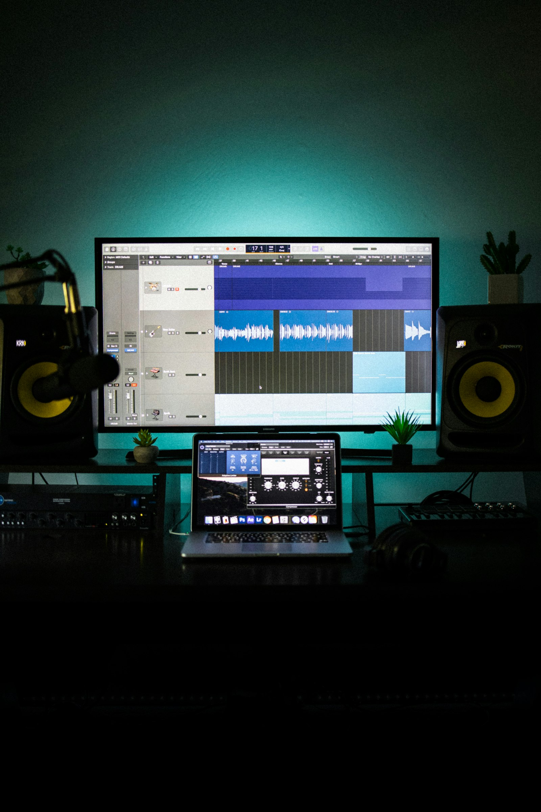

我們的做法
AI 和老師，各做最擅長的事
AI 工具讓「做出一首歌」的門檻大幅降低，但好不好聽、怎麼改得更好，還是需要有經驗的人給回饋。
AI 負責效率
把你的靈感快速變成旋律、和弦與編曲草稿，省下摸索軟體與基礎理論的時間。
真人老師負責講評
聽你的作品、指出問題、告訴你下一步怎麼調整，讓作品從「能聽」變成「想再聽」。
3 小時課程流程
從一句想法到一首歌
-
說出你的想法
想寫給誰、什麼心情、什麼風格——老師帶你把想法整理成 AI 聽得懂的提示詞。
-
和 AI 一起創作
生成旋律、歌詞與編曲版本，挑出最喜歡的方向，一步步修到滿意。
-
老師講評、完成作品
真人老師針對你的作品給具體建議，修改後帶走屬於你的第一首歌。
學員作品（示意）
作品展示區
課程開始後，學員在課堂上和 AI 一起完成、再經過老師講評修改的作品會放在這裡。目前先用公眾領域（CC0）的音樂示範播放效果，以下並非學員作品。
※ 以上音樂皆為 CC0 公眾領域授權，僅用於示範播放器版面，並非本教室學員作品。
兩種方案
依你的程度選擇
零基礎・想有人帶
方案 A｜門市面授實戰班
3 小時門市小班，每班 12 人，課後 30 天微信群答疑。
RMB 898

有經驗・想更進一步
方案 B｜線上自學健檢班
3 小時隨選影音（進階提示詞與混音），加一次老師一對一作品健檢。
RMB 398